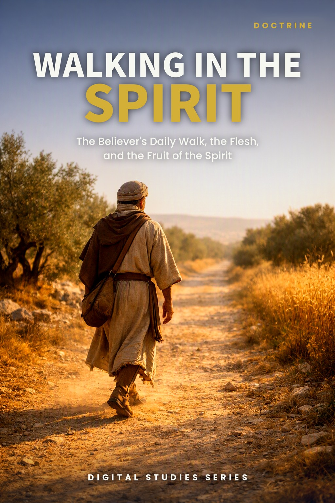
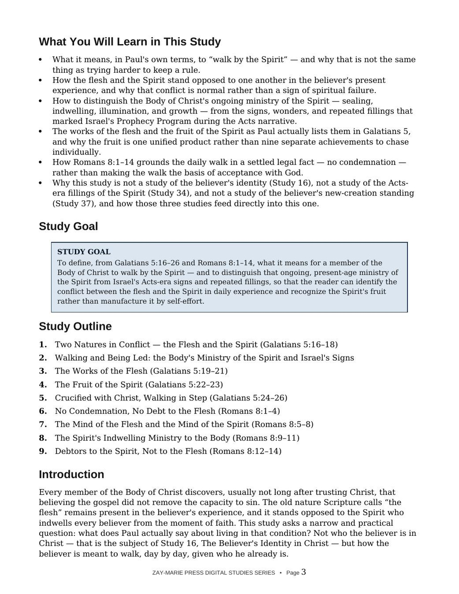
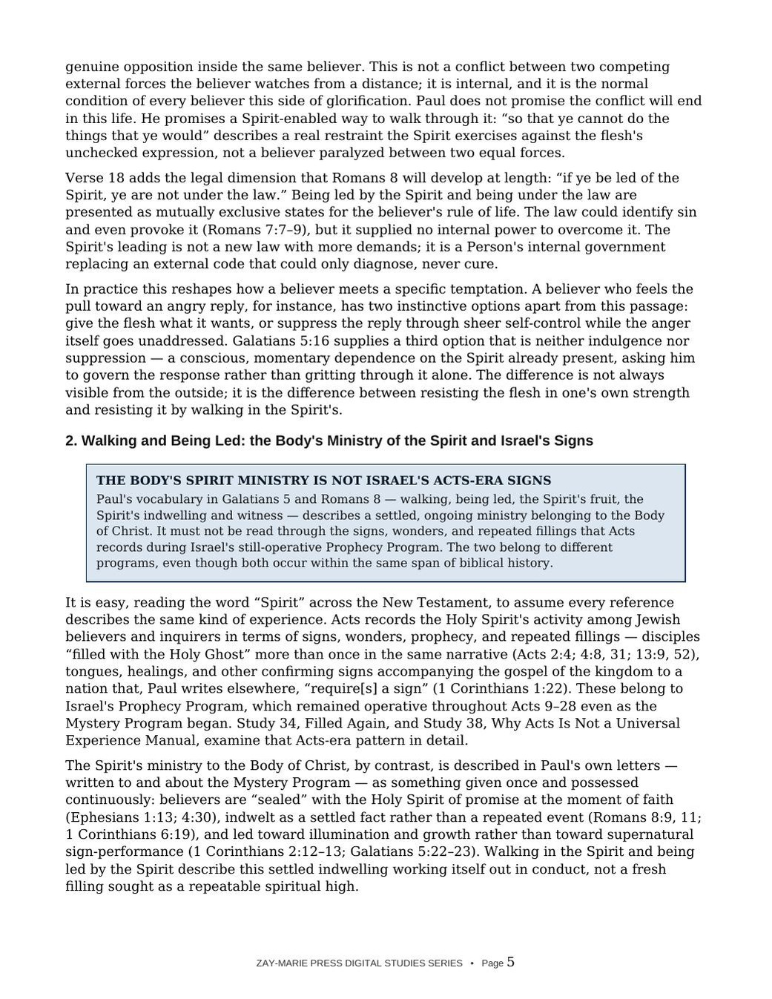
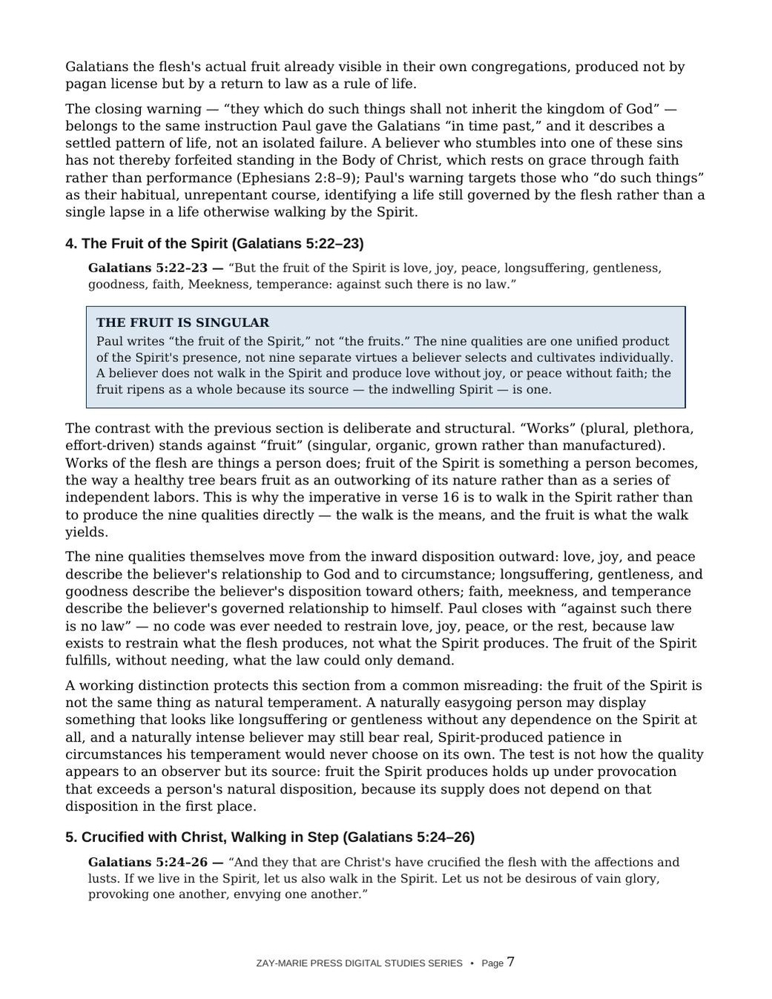
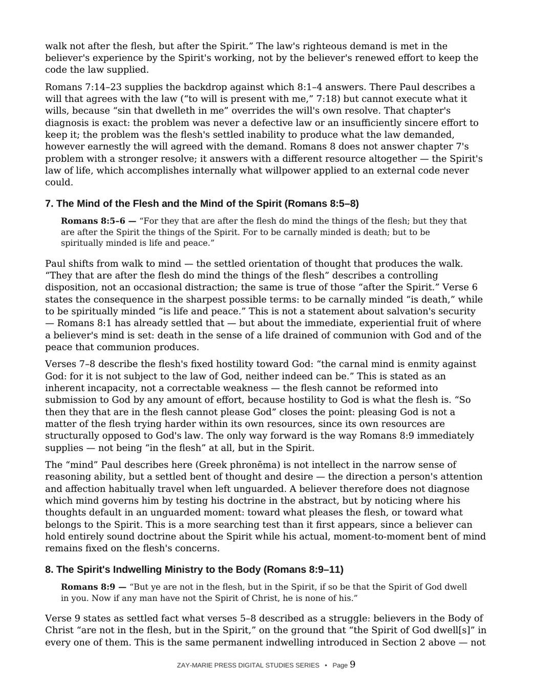

Walking in the Spirit
The Believer's Daily Walk, the Flesh, and the Fruit of the Spirit
A Biblical Examination of the Flesh/Spirit Conflict, the Body's Settled Ministry of the Spirit, and the Fruit That Walk Produces
Every member of the Body of Christ discovers, usually not long after trusting Christ, that believing the gospel did not remove the capacity to sin. The flesh remains present in the believer's experience, standing opposed to the Spirit who indwells every believer from the moment of faith.
This study asks a narrow, practical question: what does Paul actually say about living in that condition? It defines walking by the Spirit from Galatians 5 and Romans 8, distinguishes the Body's settled indwelling ministry from the signs and repeated fillings that marked Israel's Acts-era Prophecy Program, and follows the works of the flesh and the fruit of the Spirit as Paul himself lists them.
A Conflict That Is Normal, Not a Sign of Failure
The flesh and the Spirit stand genuinely opposed to one another inside every believer, and Paul treats that conflict as the normal condition of the present life, not evidence of spiritual failure. Reading Galatians 5 and Romans 8 in order shows what Paul actually commands in that condition: not trying harder to keep a rule, but a continuous, moment-by-moment dependence on the Spirit who already indwells.
This study is not a study of the believer's identity in Christ, which Study 16 examines, nor of the Acts-era fillings of the Spirit, which Study 34 examines, nor of the believer's new-creation standing, which Study 37 examines. It assumes each of those and asks a different question: given who the believer already is, how is the believer meant to walk, day by day?
How These Studies Relate
Study 44 defines what it means for a member of the Body of Christ to walk by the Spirit, and distinguishes that ongoing, present-age ministry from Israel's Acts-era signs and repeated fillings.
Study 16 — The Believer's Identity in Christ Start with the settled identity and standing this study assumes; Study 44 examines how that standing works itself out in daily conduct.
Study 34 — Filled Again Read the Acts-era pattern of repeated, renewed fillings for Israel's apostolic servants; this study distinguishes that from the Body's settled, once-for-all indwelling.
Study 37 — What Does Paul Mean by “New Creation”? Examine the accomplished new-creation standing this study presupposes without repeating; Study 44 focuses on the present-tense walk rather than the standing itself.
Follow the Walk From Command to Conflict to Fruit
Two Natures in Conflict
See what it means to walk by the Spirit, and why the flesh and Spirit are genuinely opposed within the believer.
Whose Ministry This Is
Distinguish the Body's settled ministry of the Spirit from Israel's Acts-era signs, wonders, and repeated fillings.
The Works of the Flesh
Read Galatians 5:19–21's list on its own terms, as a habitual life pattern rather than an isolated lapse.
The Fruit of the Spirit
See why Paul writes “fruit,” singular, and why it is grown rather than manufactured by self-effort.
No Condemnation
Ground the daily walk in Romans 8:1's settled legal fact rather than making the walk the basis of acceptance.
Debtors to the Spirit
Follow Romans 8:12–14 to the identity the Spirit-led walk confirms: sons of God, not servants under wages.
Examine the Passages for Yourself
Galatians 5:16–18
Walk in the Spirit, and the flesh and Spirit are shown genuinely opposed to one another.
Galatians 5:19–21
The works of the flesh, plural and manifest, as Paul actually lists them.
Galatians 5:22–23
The fruit of the Spirit — singular — against which Paul says there is no law.
Galatians 5:24–26
Have crucified the flesh; let us also walk — the fact and the command.
Romans 8:1–4
No condemnation, and why the law could not produce righteousness in experience.
Romans 8:5–8
The mind of the flesh and the mind of the Spirit, and their stated outcomes.
Romans 8:9–11
The Spirit's permanent indwelling, and what it guarantees for the future.
Romans 8:12–14
Debtors to the Spirit, and the sonship that being led by the Spirit confirms.
The Walk Is the Means, the Fruit Is What It Yields
“Works” (plural, effort-driven) stands against “fruit” (singular, grown rather than manufactured).
Paul's imperative in Galatians 5:16 is to walk in the Spirit, not to produce the nine qualities of the fruit directly. The walk is the means; the fruit is what the walk yields — the way a healthy tree bears fruit as an outworking of its nature rather than as a series of independent labors.
Preview the Study Before You Purchase
Click any page to enlarge it for reading.
{kind=link}

What You Will Learn
See the study's goal, outline, and the question it sets out to answer.
{kind=link}

Whose Ministry This Is
See why the Body's settled Spirit ministry must not be read through Israel's Acts-era signs and fillings.
{kind=link}

The Fruit Is Singular
Read why the nine qualities of the fruit are one unified product rather than nine separate achievements.
{kind=link}

The Mind That Governs the Walk
See the settled bent of thought Paul describes, and the Person who sustains it.
A Focused Study Built for
Understanding and Teaching
14-Page In-Depth Biblical Study
A careful study of the believer's daily walk, the flesh, and the fruit of the Spirit.
9 Core Teaching Sections
Progress from the command and the conflict through the works of the flesh to the fruit and its legal ground.
One Reference Table
Distinguish the Body's settled Spirit ministry from Israel's Acts-era signs at a glance.
7 Review Questions
Test the study's distinctions concerning the flesh, the Spirit, and the ground of the walk.
Teaching Outline
An eight-point framework for teaching the flesh/Spirit conflict and the fruit of the Spirit with precision.
Guided Further Study
Return to the Spirit's sealing, Acts-era fillings, the flesh, and sonship with directed questions.
Scripture-Tracing Exercise
Trace the study's key passages across Galatians 5 and Romans 8 in their own context.
Final Synthesis Exercise
Bring the evidence together in one coherent, Scripture-based explanation.
Walking in the Spirit
15-page digital PDF · For personal use
Want More Than a Focused Study?
Digital Studies examine particular biblical subjects and difficult passages. The 40-lesson Biblical Hermeneutics course teaches a complete, repeatable method for establishing meaning in context, determining proper assignment, and making responsible application.